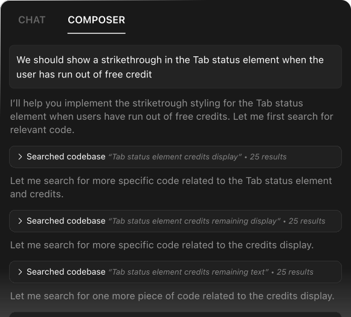

Agent
Cursor's agent mode can complete tasks end to end. It does this quickly, while keeping programmers in the loop. Try it out by selecting 'agent' in Composer.

Build software faster
Cursor's agent mode can complete tasks end to end. It does this quickly, while keeping programmers in the loop. Try it out by selecting 'agent' in Composer.

Using custom retrieval models, Cursor can understand a codebase. This reduces the need to manually add context.

Cursor can automatically write and run terminal commands. By default, you'll be asked to confirm all commands.

Cursor can detect lint errors automatically and apply fixes, reducing the need for manual debugging.
Cursor includes a powerful autocomplete that predicts your next edit. Once enabled, it is always on and will suggest edits to your code across multiple lines, taking into account your recent changes.
Cursor can suggest multiple edits at once, saving you time.
Type carelessly, and Cursor will fix your mistakes.
Cursor predicts your next cursor position so you can seamlessly navigate your code.
Chat lets you talk with an AI that sees your codebase. The chat can always see your current file and cursor, so you can ask it things like: "Is there a bug here?". You can add particular blocks of code to the context with ⌘+Shift+L or "@." You can chat with your entire codebase with ⌘+Enter.
Apply the code suggestions from chat back into your codebase by clicking the play button on top of any chat codeblock.
Use @Codebase or ⌘ Enter to ask questions about your codebase. Cursor will search your codebase to find relevant code to your query.
Reference code with @ symbols to be used as context for the AI. Just type @ to see a list of all the files and code symbols in your folder.
Hit the image button under chat or drag an image into the input box to include visual context into chat.
Get up-to-date information from the internet with @Web. Cursor will search the web for you and use the latest information to answer your question.
Reference popular libraries using @LibraryName, or add your own using @Docs → Add new doc.
⌘ K lets you edit and write code with the AI. To edit, try selecting some code, click "Edit," and describe how the code should be changed. To generate completely new code, just type ⌘ K without selecting anything.
Use ⌘ K in the terminal to write terminal commands in plain english. Cursor will convert them into the terminal command you need.
If you have any quick questions about certain parts of your code, you can select and click on "quick question" to get your answer right away.